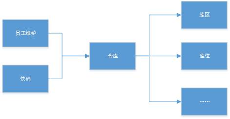
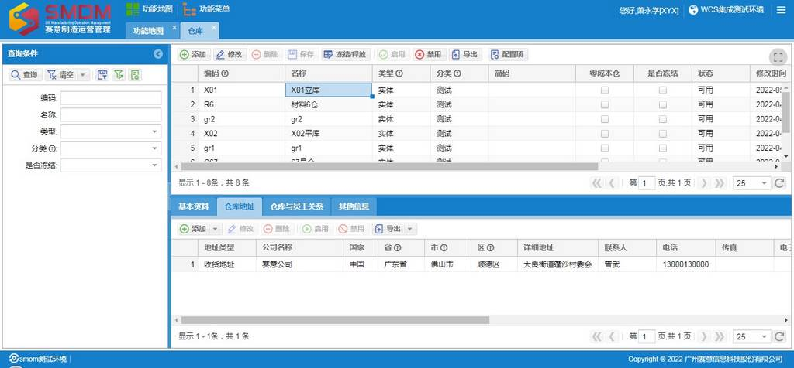
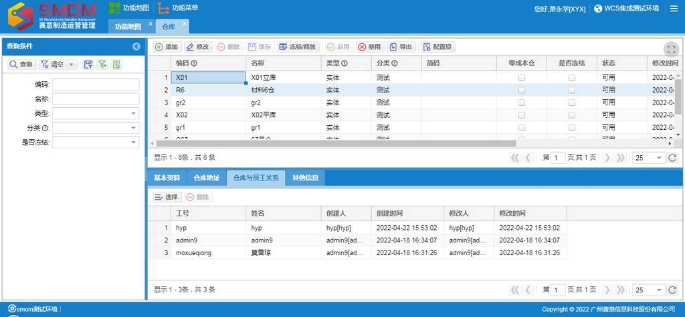
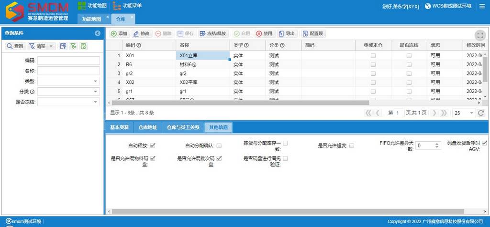

・
功能简介
仓库是
WMS
管理的基础，是基础资料中的基础，
WMS
所管理的库存业务都是基于仓库开展的，几乎所有
WMS
功能模块都需要用到仓库。
・
功能关系

【图
2.1.1
】仓库功能关系图
・
名词解释
1
、无。
・
操作流程
【图
2.1.2
】仓库维护基本流程
・
界面说明
|

【图
2.1.3
】仓库
Ø
前置条件
1
、在快码模块的仓库分类按照公司习惯自定义仓库的分类，例如，原材料仓、成品仓、辅料仓、化学品仓
Ø
字段说明
1
、类型：可选项有
“
实体、虚拟
”
，实体代表仓库是真实存在并放置物料的，物料在实体仓库的业务是使用普通的收存发库功能。虚拟代表仓库是为了处理库存账而虚构出来的，物料在虚拟仓库的业务是使用虚仓出入库管理功能，没有库内管理。
Ø
关键操作
1
、添加：维护仓库编码和名称，正确选择类型，正确选择分类。编码不能重复，尽量简洁有意义，最长不能超过
13
位，建议不超过
3
位字符，例如，
R01
、
F01
。
2
、删除：将仓库下的库区删除后，并且仓库没有被其他功能引用，并且将仓库禁用，才能将仓库删除。
3
、保存：新建的仓库保存后，会自动创建仓库下
STAGE
和
PICKTO
两个库区，并自动创建
STAGE
库区下
STAGE
库位、上架过渡库位、下架过渡库位，自动创建
PICKTO
库区的
PICKTO
库位、上架过渡库位、下架过渡库位。
4
、冻结
/
释放：将仓库进行冻结或释放的操作。仓库冻结后，物料不能在仓库中进行变动，并且会将其下的库区和库位冻结。仓库释放后，除了将仓库解冻外，还会将仓库下所有库位的冻结原因中的
“
仓库冻结
”
记录删除。
5
、启用：将禁用的仓库改为可用，可用的仓库才能放置物料，只有仓库启用，仓库下的库区才能启用。
6
、禁用：将启用的仓库改为禁用，禁用的仓库是没有库存并且不能再放置物料，只有仓库下的库区都禁用，仓库才能禁用。
7
、配置项：可以配置新建仓库的编码规则
Ø
备注
1
、除了添加操作和保存操作，其余都是非必要操作。
2
、基本资料页签的内容无应用逻辑，仅作显示。
3
、仓库地址页签的内容无重要应用，个别地方会引用到仓库地址，仓库地址可以维护多个。如果需要用到结构化的地址维护，需要在新搭建的环境中将地址脚本数据插入到数据库中。

【图
2.1.4
】仓库
-
仓库与员工关系
Ø
前置条件
1
、无
Ø
字段说明
1
、无
Ø
关键操作
1
、选择：选择能查看及操作仓库的员工，只有维护了该关系，员工才有查看仓库下的数据及操作仓库业务单据的权限。
Ø
备注
1
、无

【图
2.1.5
】仓库
-
其他信息
Ø
前置条件
1
、无
Ø
字段说明
1
、自动释放：勾选后，在
ASN
审核和发运订单审核时，会自动触发释放按钮的逻辑。
2
、自动分配确认：勾选后，在发运订单分配和库存调拨分配时，会自动触发确认分配逻辑。
3
、拣货与分配库存一致：勾选后，在移动端进行标准拣货时，拣货的库存必须和分配的库存一致。
4
、是否允许超发：勾选后，仓库下的发运订单才有可能超发。注意：这是超发必要条件，不是充分条件。
5
、
FIFO
允许差异天数：默认为
0
，如果不为
0
，在移动端进行标准拣货、人工拣货时，会验证拣货的库存的收货日期距当天日期是否在差异天数外的，如果在差异天数内的并且存在差异天数外的库存，则会验证不通过。
6
、码盘收货后呼叫
AGV
：勾选后，在
“
码盘收货、扫盘收货、码盘理货
”
才有可能弹出呼叫
AGV
的对话框。注意：这是弹出呼叫
AGV
对话框的必要条件，不是充分条件。
7
、是否允许混物料码盘：勾选后，在
“
码盘收货、码盘理货
”
才能混物料码盘，否则，就是不允许。勾选后，会默认将
“
是否允许混批次码盘
”
勾选，将
“
是否码盘进行满托验证
”
取消勾选。
8
、是否允许混批次码盘：勾选后，在
“
码盘收货、码盘理货
”
才能混批次码盘，否则，就是不允许。
9
、是否码盘进行满托验证：勾选后，在
“
码盘收货、码盘理货、拣货后码盘、拣货后换托
”
操作时，会验证放在托盘上的物料数量是不能超过物料包装规则托层级的包装数的。如果包装规则没有维护托包装层级，则，属于基础资料维护缺失。
Ø
关键操作
1
、无
Ø
备注
1
、其他信息页签的字段有丰富的业务逻辑，注意留有印象，在以后的业务到遇到需求时，能巷道到仓库中的设置。
2
、
“
是否允许混物料码盘、是否允许混批次码盘、是否码盘进行满托验证
”
是有关联关系的，允许混物料码盘就必定允许混批次码盘且不允许进行满盘验证的；只有不允许混物料码盘时，才可以选择是否进行满托验证。
|
・
常见问题
1
、为什么看不到某些单据数据？
解决方式：
1
）检查有没有维护单据所属仓库的人员权限。